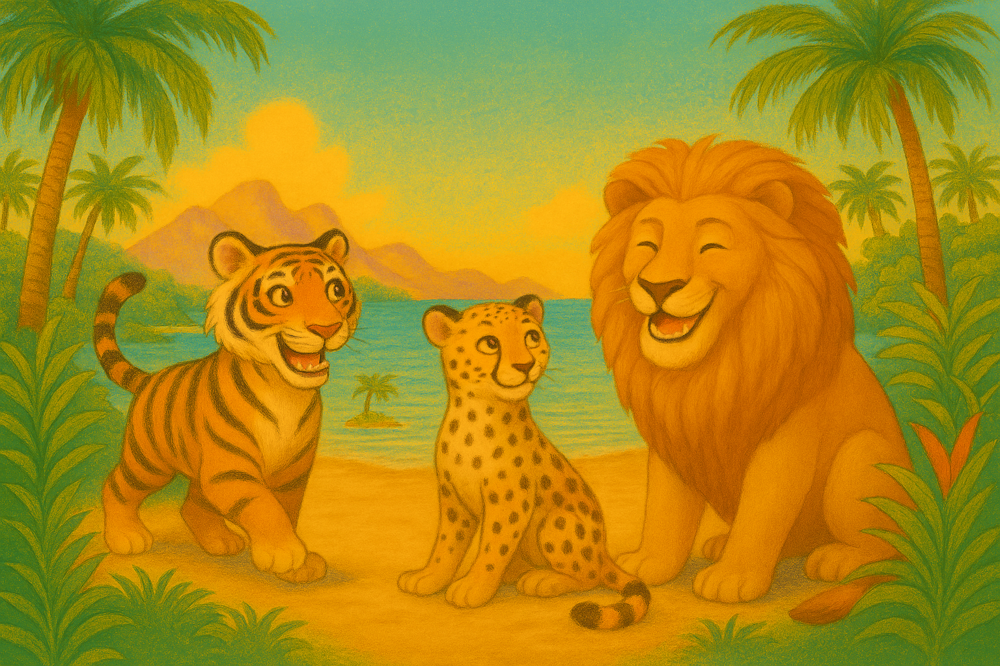

Tiko the tiger, Cici the cheetah, and Leo the lion were the best of friends. Every morning, they met by the sparkling Laguna Luma in the heart of the jungle.
“Let’s play hide-and-seek today!” Tiko said, his stripes glinting in the sunlight.
“I’m the fastest, so I should hide last!” Cici purred, her spots twinkling.
“I’ll count first!” Leo roared happily, closing his eyes.
Cici dashed to hide behind the tall grass near Coco Isle, while Tiko climbed a twisted tree, his tail flicking with excitement.
“One… two… three… ready or not, here I come!” Leo called. He searched under rocks, behind bushes, and even near the Sunstone Falls. Finally, he spotted Tiko’s striped tail sticking out from the tree. “Found you!”
Then, noticing a flick of spots moving quickly, he added, “And you too, Cici!” Cici giggled and ran to join them.
After playing all morning, the three friends lay under the glowing trees of Laguna Luma, panting and laughing.
“No matter how different we are,” Tiko, “we always have fun together.” “And we always help each other!” added Cici.
Leo smiled. “Best friends forever.”
The three friends closed their eyes, dreaming of their next adventure in the magical jungle.
